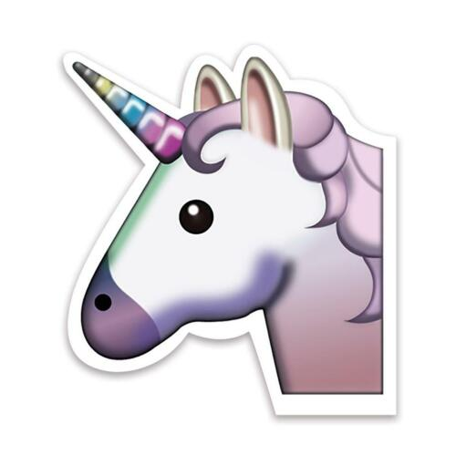

Den mätta dagen, den är aldrig störst. Den bästa dagen är en dag av törst. Nog finns det mål och mening i vår färd - men det är vägen, som mödan värd. Det bästa målet är en nattlång rast, där elden tänds och brödet bryts i hast. På ställen, där man sover blott en gång, blir sömnen trygg och drömmen full av sång. Bryt upp, bryt upp! Den nya dagen gryr. Oändligt är vårt stora äventyr.
